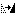
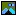
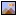

Picture Compare Overview


|
Picture Compare Overview |
|
|
A Picture Compare session compares a pair of image files visually, showing the differences between them. Aligning Image Content You can compare images that have been resized, rotated, reflected or cropped. Select View > Stretch to Same Size Select View > Rotate Clockwise Select View > Flip Horizontally  or View > Flip Vertically If one image is a cropped version of the other, you can drag the mouse over the difference pane to adjust the position of the right image's top left corner. To reset the offset back to (0,0) select View > Reset Difference Offset or simply click on the offset display on the toolbar. For finer control, use the arrow keys to nudge the offset one pixel at a time, or Ctrl+arrow keys to move by a larger amount. Note that the difference pane must be selected for the keyboard nudge function to work. Tolerance Mode Select View > Tolerance Mode Enable View > Ignore Unimportant Differences Mismatch Range Mode Select View > Mismatch Range Mode Binary Operation Mode Select View > Binary Operation Mode  to have difference pixels be the result of a boolean operation on the RGB (red/green/blue) values of the images. The binary operation can be XOR, AND, or OR. Blend Mode Select View > Blend Mode  to use a configurable Blend percentage to combine the images. Decrease the percentage to make the right image more dominant. See also
|
{kind=link}